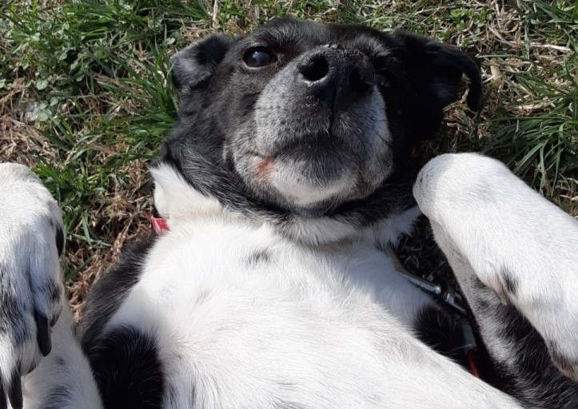
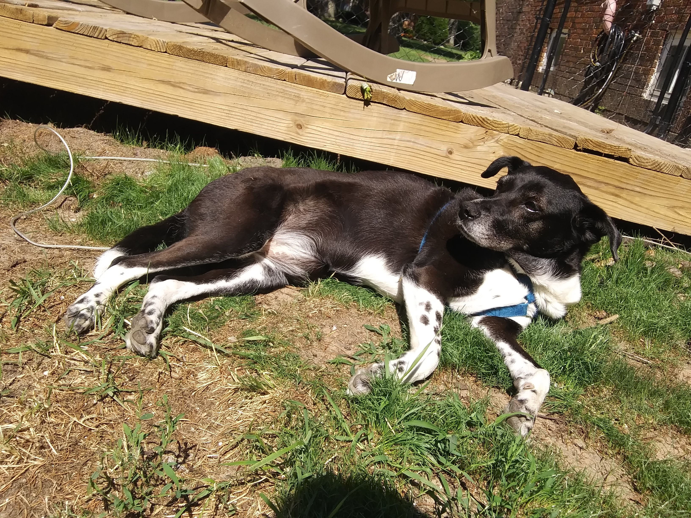

The Life of Moo




This is My Family
My human family consists of mom, dad, China, Colin, and Cassie- who are my human siblings. We lived in Pinehurst, North Carolina for 5 years before we moved to New Buffalo, Michigan. It was really warm in the South and there were a lot of squirrels. We would have lots of movie nights together in the living room. When I was a puppy I escaped from the fenced yard and was gone for 3 days. My family missed me so much that I decided to come back- covered in sewer water! As you can see, we've been through it all. There's nothing I love more than my family and nothing they love more than me!
Mom
Dad

China

Colin
Cassie